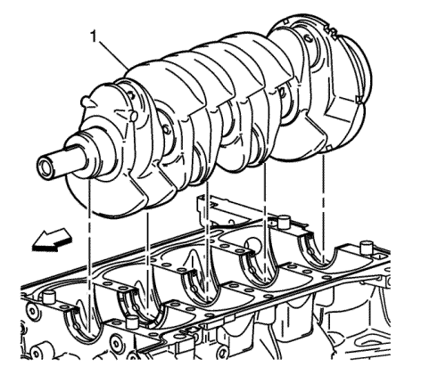
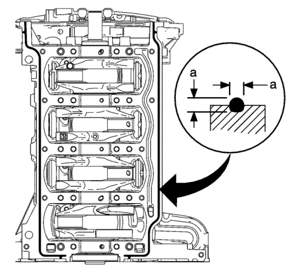
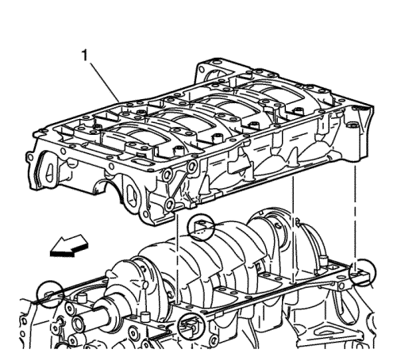

Montaje de la carcasa inferior del cigüeñal
Herramientas especiales
EN 45059 Medidor de ángulos
Si desea informarse sobre herramientas regionales equivalentes, consultar Herramientas especiales .

- Monte los cojinetes (1) superiores del cigüeñal y lubrique las superficies de los cojinetes con aceite de motor.

- Monte el cigüeñal (1) en los muñones.

- Monte los semicojinetes (1) inferiores, sin ranuras, en la carcasa inferior del cigüeñal. Aplique aceite a las superficies de cojinete.

Nota:
| • | La superficie del conjunto del bloque debe estar libre de contaminantes antes de la aplicación del sellador. |
| • | Monte y alinee la placa de asiento que debe bloquearse en 20 minutos desde la aplicación del sellador. |
| • | La placa de asiento debe ajustarse respetando la especificación del par final en 60 minutos desde la aplicación del sellador. |
- Aplique una capa de sellador de 4,25 mm, dimensión (a), directamente en la ranura del bloque en las superficies de conexión de la placa de asiento. Consultar Adhesivos, líquidos, lubricantes y selladores .

- Monte la carcasa (1) inferior del cigüeñal. Si fuera necesario, colóquela suavemente en su lugar mediante una herramienta adecuada. Asegúrese de que esté correctamente alineada en los pasadores.
Precaución: Consulte Precaución con las fijaciones en la sección Prólogo

- Monte los NUEVOS pernos de cojinete de cigüeñal y apriételos secuencialmente con los dedos.
| 6.1. | Apriete los tornillos del cojinete de cigüeñal por orden hasta 20 N·m (15 lib. pie). |
| 6.2. | Apriete los tornillos del cojinete de cigüeñal por orden, empleando el medidor EN 45059, otros 70 grados. |

- Apriete los tornillos del perímetro de la carcasa inferior de cigüeñal por orden hasta 25 N·m (18 lib. pie).
| © Copyright Chevrolet Europe. All rights reserved |